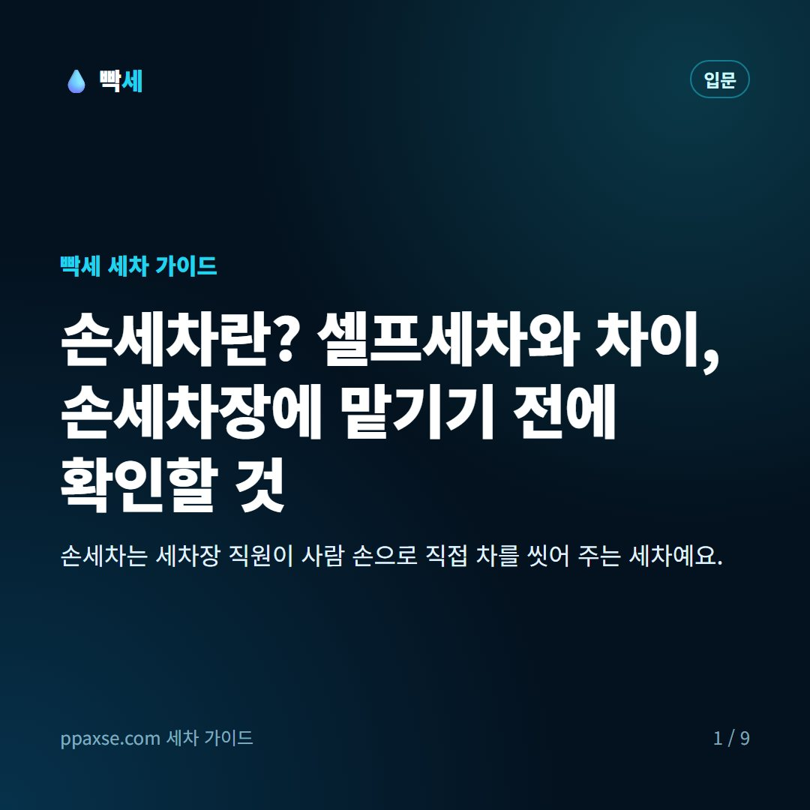
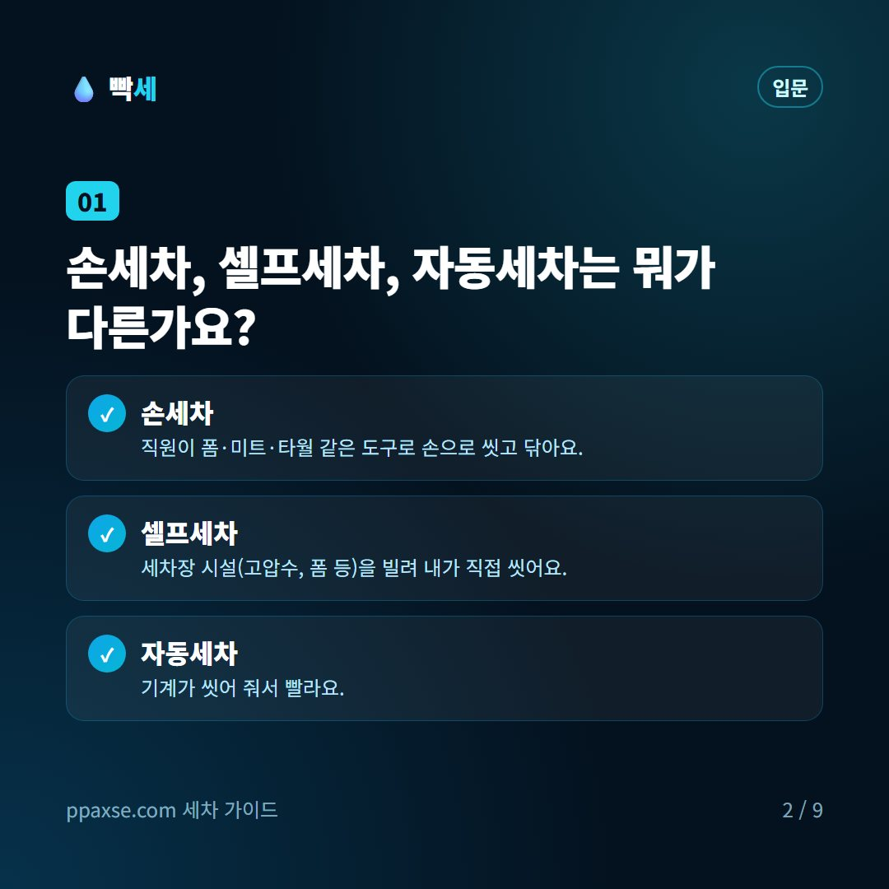
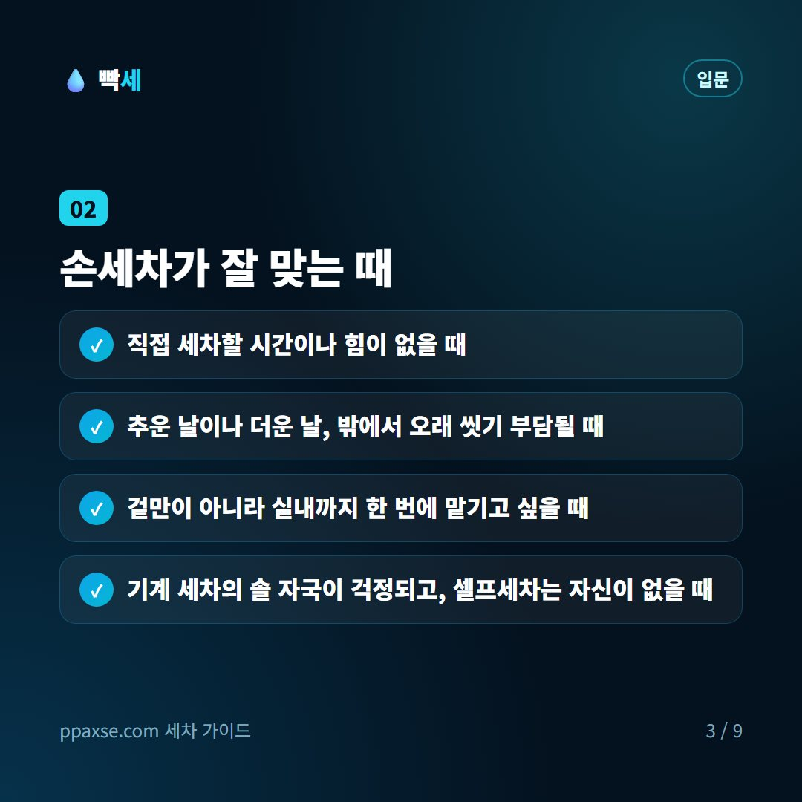
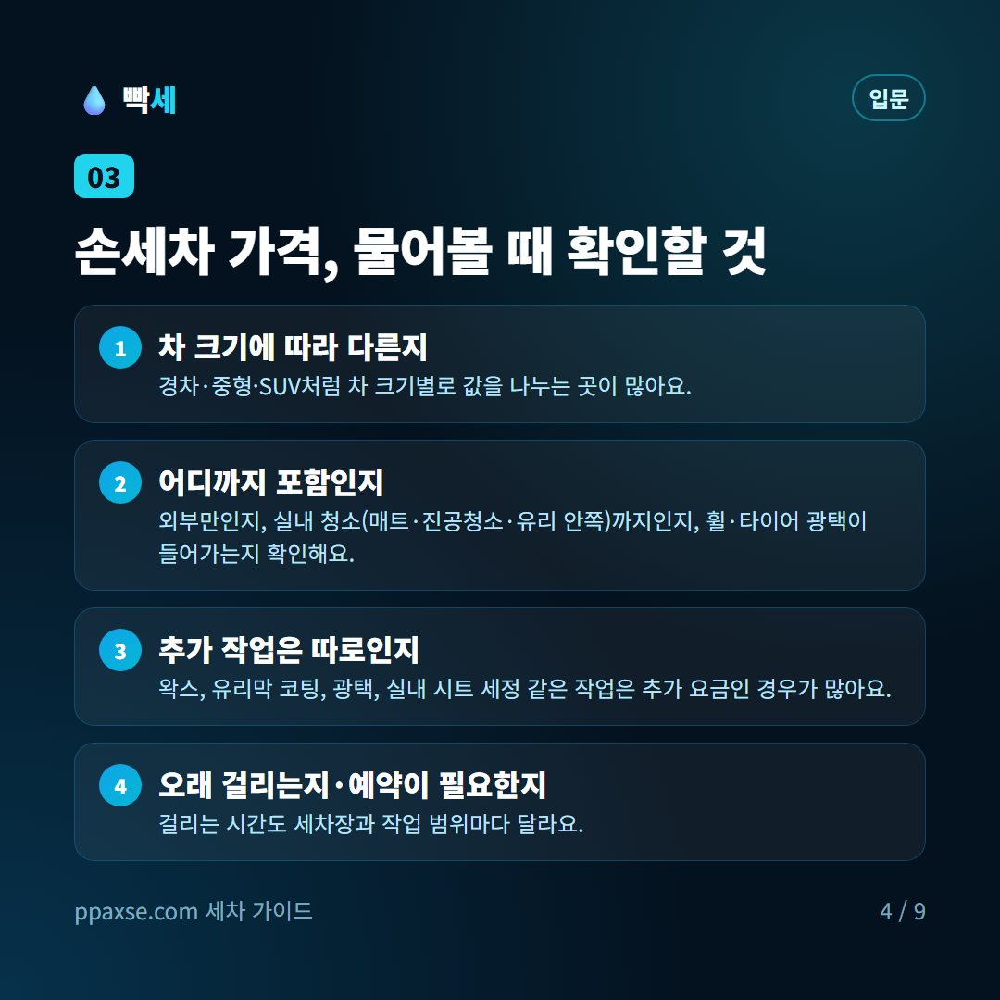
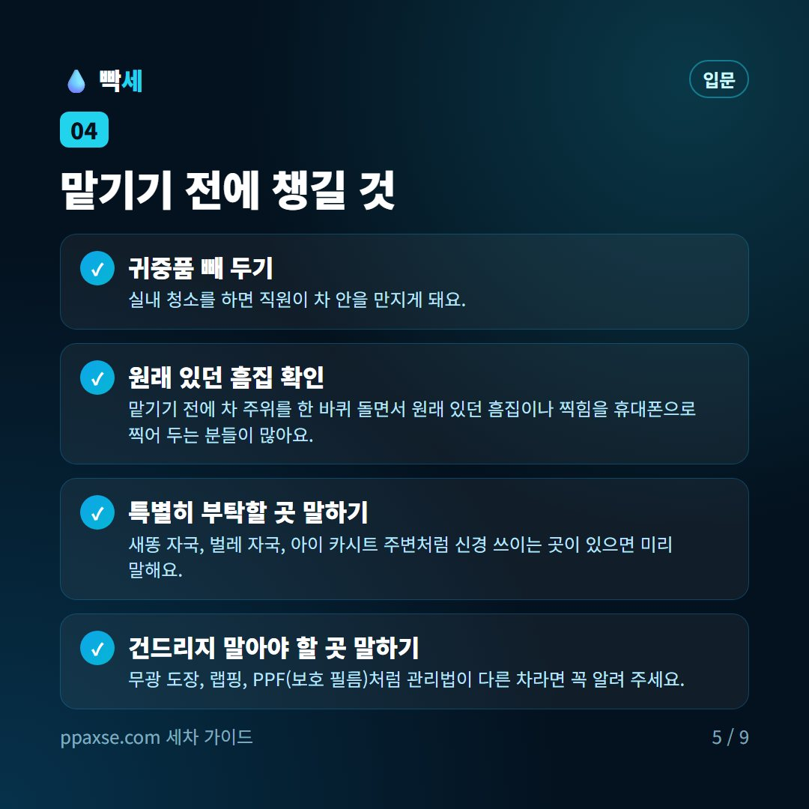
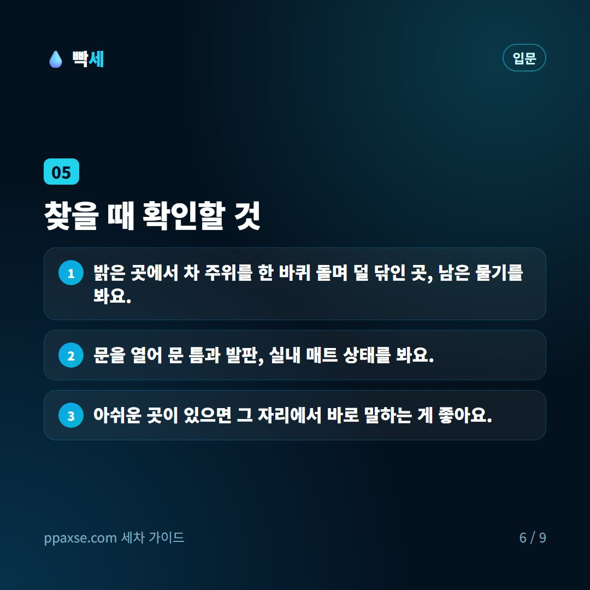

손세차란? 셀프세차와 차이, 손세차장에 맡기기 전에 확인할 것
손세차는 세차장 직원이 사람 손으로 직접 차를 씻어 주는 세차예요. 내가 직접 하는 셀프세차, 기계가 씻는 자동세차와 달리 "맡기는" 세차라서, 시간은 걸려도 손이 덜 가고 꼼꼼한 결과를 원할 때 많이 찾아요. 이 글에서는 손세차가 다른 세차와 뭐가 다른지, 손세차장에 맡기기 전에 무엇을 물어보면 좋은지를 정리했어요.

손세차, 셀프세차, 자동세차는 뭐가 다른가요?

- 손세차 — 직원이 폼·미트·타월 같은 도구로 손으로 씻고 닦아요. 기다리거나 차를 맡겨 두고, 끝나면 찾아가는 방식이에요. 실내 청소나 광택·코팅을 함께 하는 곳도 있어요.
- 셀프세차 — 세차장 시설(고압수, 폼 등)을 빌려 내가 직접 씻어요. 내 방식대로 할 수 있지만 시간과 힘이 들어요. 처음이라면 셀프세차장 처음 가는 날을 먼저 보셔도 좋아요.
- 자동세차 — 기계가 씻어 줘서 빨라요. 솔이 닿는 방식과 닿지 않는 노터치 방식이 있어요. 자세한 내용은 노터치 자동세차 이용법에 정리해 두었어요.
손세차가 잘 맞는 때

- 직접 세차할 시간이나 힘이 없을 때
- 추운 날이나 더운 날, 밖에서 오래 씻기 부담될 때
- 겉만이 아니라 실내까지 한 번에 맡기고 싶을 때
- 기계 세차의 솔 자국이 걱정되고, 셀프세차는 자신이 없을 때
반대로 겉먼지만 빨리 털어내고 싶다면 자동세차나 셀프세차가 더 편할 수 있어요. 어느 쪽이 정답이라기보다, 그날 차 상태와 내 시간에 맞춰 고르는 분들이 많아요.
손세차 가격, 물어볼 때 확인할 것

손세차 가격은 세차장마다 달라서 여기서 숫자로 말씀드리긴 어려워요. 대신 같은 "손세차"라도 아래에 따라 값이 달라지는 경우가 많으니, 전화나 현장에서 이렇게 물어보면 비교하기 쉬워요.
- 차 크기에 따라 다른지 — 경차·중형·SUV처럼 차 크기별로 값을 나누는 곳이 많아요.
- 어디까지 포함인지 — 외부만인지, 실내 청소(매트·진공청소·유리 안쪽)까지인지, 휠·타이어 광택이 들어가는지 확인해요.
- 추가 작업은 따로인지 — 왁스, 유리막 코팅, 광택, 실내 시트 세정 같은 작업은 추가 요금인 경우가 많아요.
- 오래 걸리는지·예약이 필요한지 — 걸리는 시간도 세차장과 작업 범위마다 달라요. 주말에는 기다리는 곳도 있어서 예약을 받는지 물어보면 좋아요.
맡기기 전에 챙길 것

- 귀중품 빼 두기 — 실내 청소를 하면 직원이 차 안을 만지게 돼요. 지갑, 현금, 서류, 작은 소지품은 미리 챙겨요.
- 원래 있던 흠집 확인 — 맡기기 전에 차 주위를 한 바퀴 돌면서 원래 있던 흠집이나 찍힘을 휴대폰으로 찍어 두는 분들이 많아요. 끝나고 헷갈릴 일이 줄어요.
- 특별히 부탁할 곳 말하기 — 새똥 자국, 벌레 자국, 아이 카시트 주변처럼 신경 쓰이는 곳이 있으면 미리 말해요.
- 건드리지 말아야 할 곳 말하기 — 무광 도장, 랩핑, PPF(보호 필름)처럼 관리법이 다른 차라면 꼭 알려 주세요. 무광 차량은 무광 도장 차량 세차 방법도 참고해 보세요.
찾을 때 확인할 것

- 밝은 곳에서 차 주위를 한 바퀴 돌며 덜 닦인 곳, 남은 물기를 봐요. 사이드미러 밑, 문 손잡이, 트렁크 틈에 물이 남기 쉬워요.
- 문을 열어 문 틈과 발판, 실내 매트 상태를 봐요.
- 아쉬운 곳이 있으면 그 자리에서 바로 말하는 게 좋아요. 집에 가서 발견하면 다시 오기 번거로워요.
새 차를 처음 맡기는 거라면 새 차 출고 후 첫 세차에서 주의할 점을 함께 보셔도 좋아요.
내 주변 손세차장 찾기
손세차장은 실내 청소를 함께 하는지, 예약을 받는지, 기다리는 공간이 있는지가 곳마다 달라요. 빡세 지도에서는 세차장 종류(셀프·손세차·노터치·자동세차·디테일링)와 시설 정보를 이용자들이 함께 채워가고 있어요. 지역별 목록은 지역별 세차장 모음에서 볼 수 있어요.
다녀온 손세차장이 어땠는지("실내까지 꼼꼼해요", "주말엔 예약하고 가세요" 같은 정보)를 한마디로 남겨 주시면, 다음 사람이 세차장을 고를 때 큰 도움이 돼요.
셀프세차·노터치·손세차를 종류별로 골라 보고, 폼건·온수·하부세차 같은 시설 정보도 확인할 수 있어요.
🗺️ 세차장 지도 열기✏️ 자주 가는 세차장에 한마디 남기기🎁 한마디를 남기면 가입 없이도 매주 기프티콘 추첨에 응모돼요.